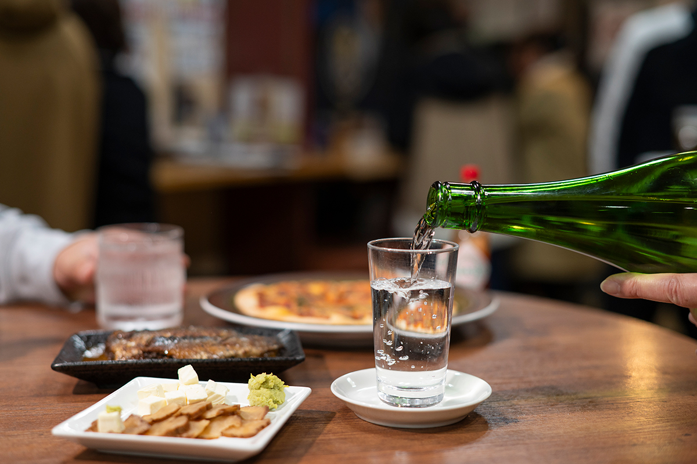
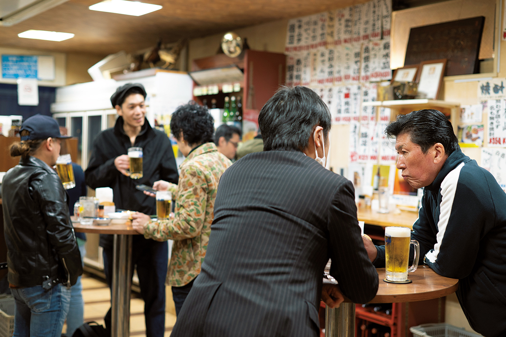
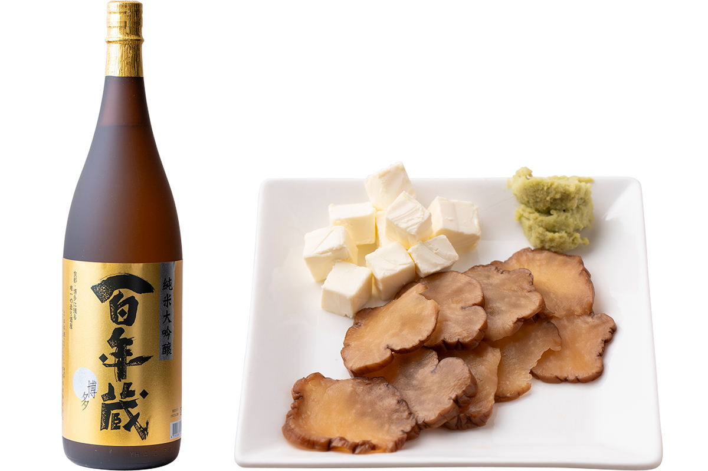
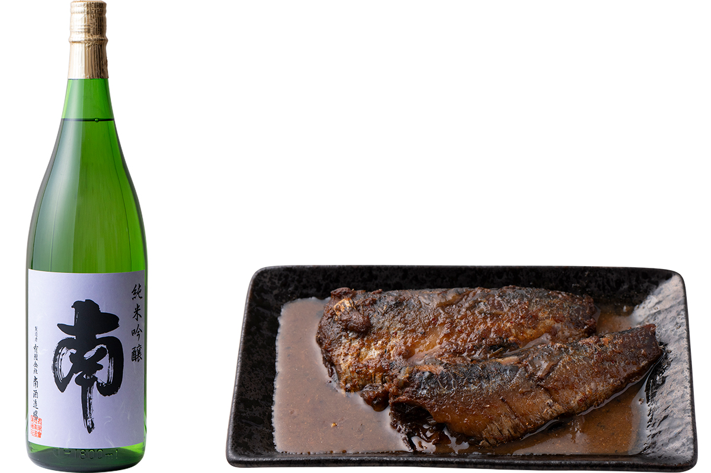
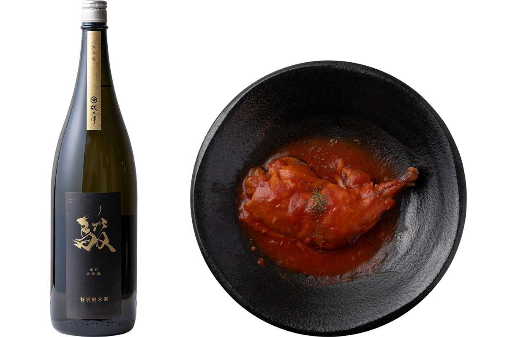
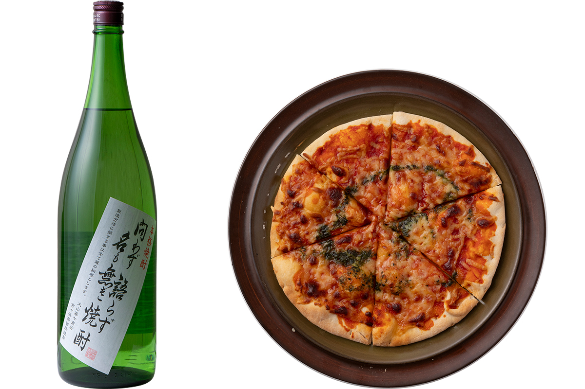
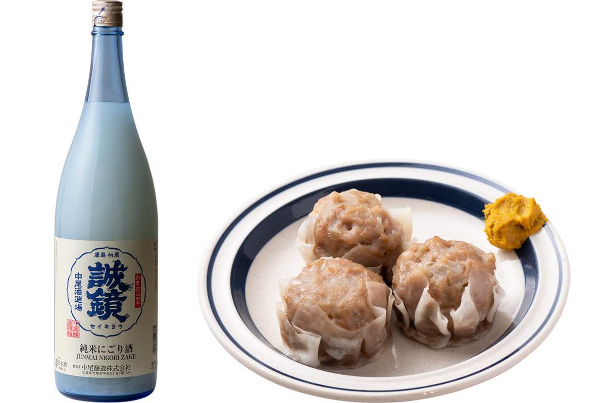
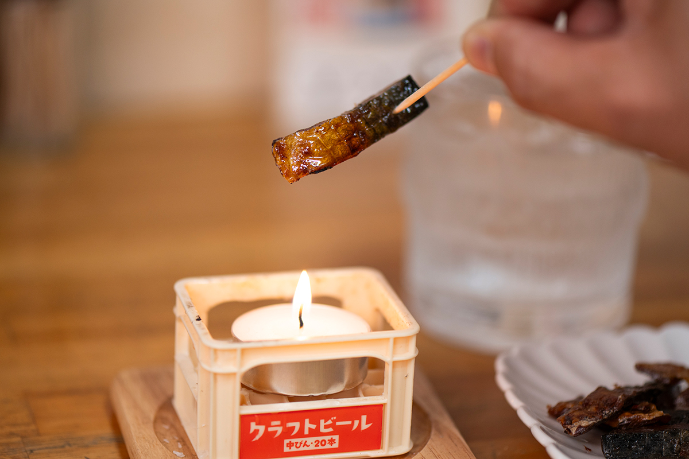
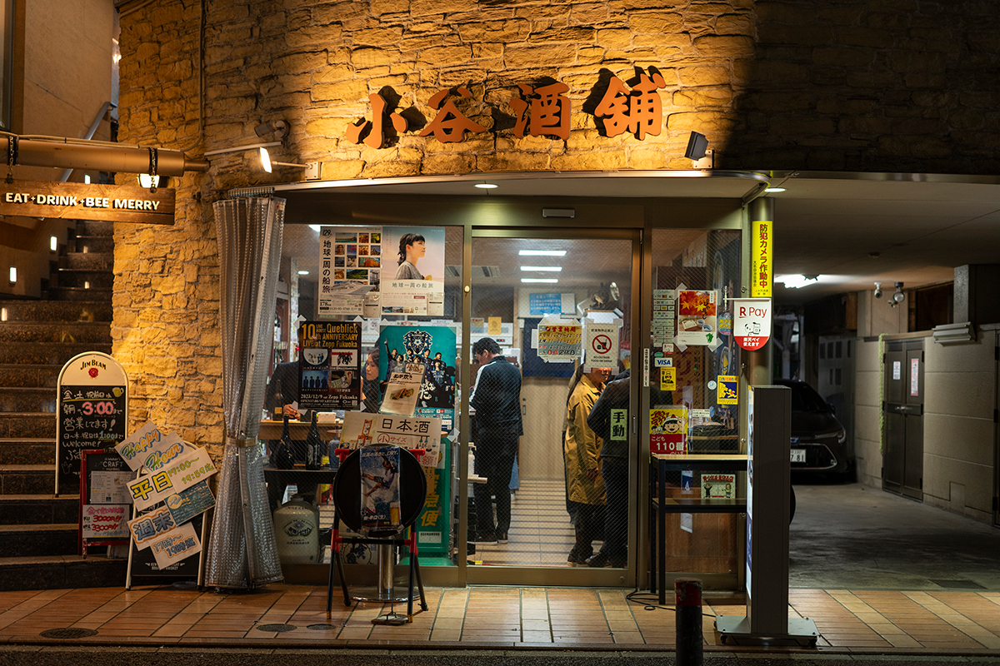

Префектура Фукуока · Даймё · еда и сакэ
«Котани сюхо» в Даймё: винная лавка, где сакэ пьют прямо у прилавка

Какуути называют винную лавку, где купленное можно выпить тут же, у прилавка. В Фукуоке эта привычка давно стала частью городской жизни, и одна из самых оживлённых таких лавок работает в Даймё, главном квартале развлечений города.
Какуути
Лавка, где знакомятся с сакэ
В какуути приходят не только выпить. Здесь разговаривают с хозяином и такими же любителями сакэ, без лишних церемоний узнают о напитках больше и пробуют то, что сами бы не выбрали. Хорошая лавка держится на двух вещах: на подборе сакэ и на закусках.
«Котани сюхо» стоит в Даймё, самом оживлённом квартале Фукуоки. Вкусных мест вокруг множество, поэтому к закускам здесь требования особые. И всё же в лавке почти всегда полно гостей.
История
С 1950 года

Лавка работает в центре Фукуоки с 1950 года. Её основал дед нынешнего хозяина, бывший госслужащий, и его сослуживцы заходили сюда после работы, как в гости, выпить по стаканчику.
«Одно время мы в основном развозили заказы, и какуути пришлось закрыть. Потом продавать спиртное разрешили и круглосуточным магазинам, и нас это тоже задело»
хозяин лавки в третьем поколении
Во время учёбы в Австралии он увидел, как процветают винные магазины, где к напиткам подают хорошие закуски, и решил перенести эту идею домой. Около 2006 года какуути в «Котани сюхо» открылось снова.
Какуути привлекло новых постоянных гостей, но «Котани сюхо» по-прежнему прежде всего винная лавка и зарабатывает на продаже сакэ. Поэтому и закуски, и напитки здесь до сих пор стоят недорого.
«Наше какуути это что-то вроде платной дегустации. Хочется, чтобы здесь находили бокал по душе, особенно сакэ, которое раньше не пробовали»
хозяин лавки
Шумно здесь уже с раннего вечера, а разговоры гостей с персоналом о том, что сегодня стоит попробовать, давно стали обычной картиной.
Пары
Японская, западная или китайская закуска
К каждому бокалу в «Котани сюхо» можно подобрать свою закуску. Вот несколько пар, которые предлагает лавка.
Японская кухня
Ибуригакко, копчёную маринованную редьку из префектуры Акита, здесь подают с крем-сыром и васаби. Её дымный аромат неожиданно хорошо сочетается с фукуокским сакэ дзюммай дайгиндзё «Хякунэнгура».
Нукадаки, рыбу, тушённую с рисовыми отрубями, готовят в Китакюсю, на родине какуути. В лавке её делают из пяти видов рыбы, и лучшая из них сардина. К ней советуют дзюммай гиндзё «Минами» от небольшой винокурни, которая варит сакэ малыми партиями и без спешки.


Западная кухня
Особое дзюммай «Сюн» сварено в Укихе, городе на юге префектуры. В нём хорошо чувствуется вкус риса, и это сакэ создано для еды: оно выдерживает и яркую курицу, тушённую в томатах.
Лёгкий и мягкий сётю на белом кодзи «Товадзу катарадзу на мо наки сётю», при этом с отчётливым вкусом батата, своей сухостью хорошо подходит к пицце «Маргарита».


Китайская кухня
К сочным мясным сюмай советуют «Сэйкё», нигори-дзакэ. Это мутное сакэ, но вкус у него чистый и сухой. Его пьют охлаждённым, комнатной температуры, слегка или сильно подогретым: оно хорошо при любой температуре.

Под сакэ или сётю стоит взять вяленого лосося или скумбрию: их подрумянивают прямо на столе, и это отдельное маленькое представление. Особенно хороша скумбрия, в которой остаётся в меру жира.

Меню
Что налить
Цены ниже указаны за бокал, а для японского сакэ за один го (180 мл), по состоянию на 2024 год.
Японское сакэ: дзюммай дайгиндзё «Китая», 480 иен; дзюммай гиндзё «Мунэмаса», 420 иен; дзюммай «Адзумаити», 420 иен; дзюммай гиндзё «Ханаюки», 450 иен; дзюммай гиндзё «Суйгэй Гинрэй», 460 иен; дзюммай гиндзё «Айдзу хомарэ Тацумигура», 460 иен.
Сётю: «Дэнъэн», выдержанный под музыку, 350 иен; «Дайямэ», 400 иен; «Кумэдзима но Кумэсэн», 350 иен; кунжутный сётю «Бэни отомэ», 350 иен.
Другое: бокал красного или белого вина, 290 иен; глинтвейн, 400 иен; лимонная настойка «Отё», 430 иен.

«Котани сюхо»
- Адрес
- префектура Фукуока, Фукуока, район Тюо, Даймё, 1-11-13
- Телефон
- +81 92-741-2924
- Часы работы
- будни 11:00–22:00 (последний заказ 21:45), суббота 11:00–21:00 (последний заказ 20:45), праздники 12:00–19:00 (последний заказ 18:45)
- Выходные
- воскресенье
- Цены / Вход
- платы за вход нет; распитие купленной бутылки на месте +60 иен (до 700 мл) или +300 иен (от 700 мл)
Фото: Хироси Мидзусаки.